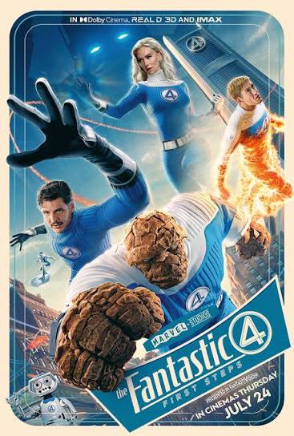

Phase 6
Шестая фаза продолжает Multiverse Saga и станет важным этапом развития MCU. Она объединяет новые истории и крупных героев вселенной Marvel.

The Fantastic Four: First Steps
Фантастическая четвёрка становится одной из новых важных команд MCU.

Spider-Man: Brand New Day
Новая глава истории Питера Паркера в кинематографической вселенной Marvel.

Avengers: Doomsday
Новая масштабная история Avengers, связанная с будущим MCU.

Avengers: Secret Wars
Одна из главных будущих историй Multiverse Saga.